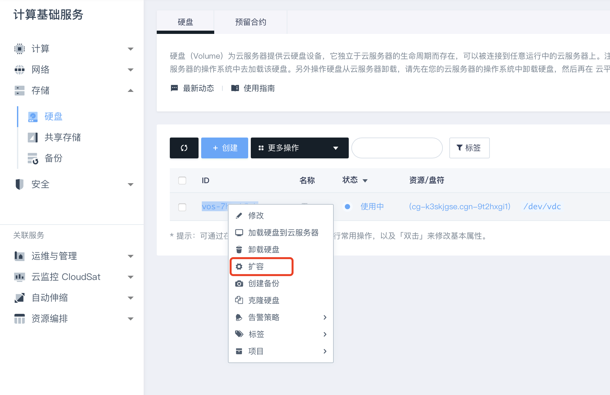
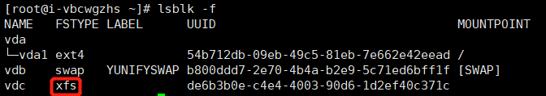
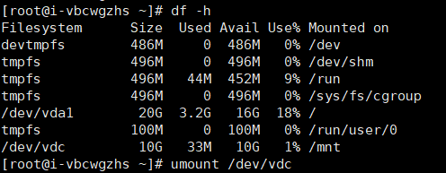
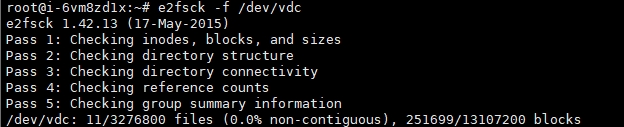
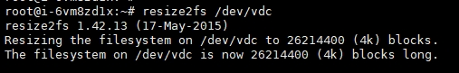
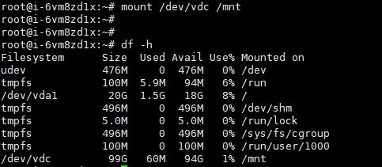
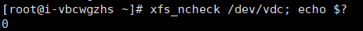
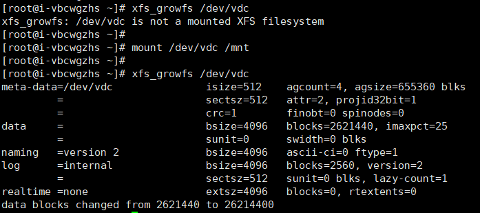
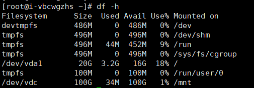

云服务器怎么扩容磁盘
问题现象
用户使用云服务器时，往往会有遇到需要扩容云硬盘的场景。
操作步骤
控制台扩容
登录管理控制台，右键硬盘的资源id—扩容，调整业务所需要的容量并提交，此处扩容为100G。

云硬盘扩容文件系统
需要查看磁盘的文件系统类型，并将挂载的磁盘卸载。
lsblk -f
df -h #查看挂载盘符为/dev/vdc
umount /dev/vdc


- EXT文件系统扩容
检查分区
执行以下命令，检查扩容后的分区。
e2fsck -f /dev/vdc

扩容文件系统
执行 resize2fs 命令扩容文件系统。
resize2fs /dev/vdc

挂载并检查容量
使用mount命令将扩容后的磁盘挂载到系统目录，并检查容量变化。
mount /dev/vdc /mnt
df -h

- XFS文件系统扩容
检查分区
执行以下命令，检查扩容后的分区。若输出为0，说明正常。
xfs_ncheck /dev/vdc; echo $?

扩容文件系统
需要先将磁盘挂载，然后执行 xfs_growfs 命令扩容文件系统，否则会报错。
mount /dev/vdc /mnt
xfs_growfs /dev/vdc

检查容量
df -h
